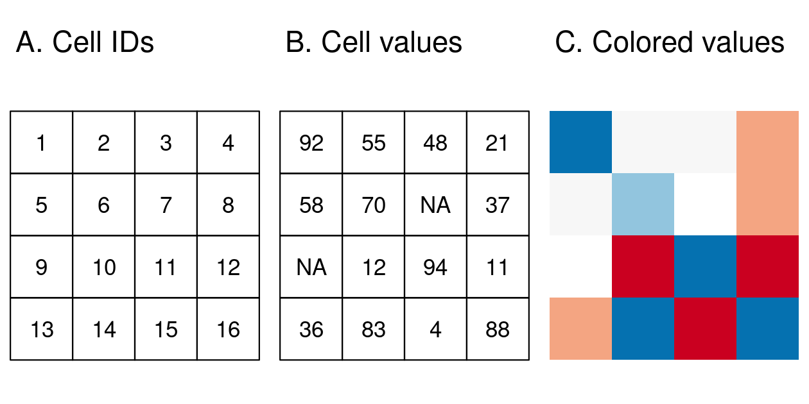
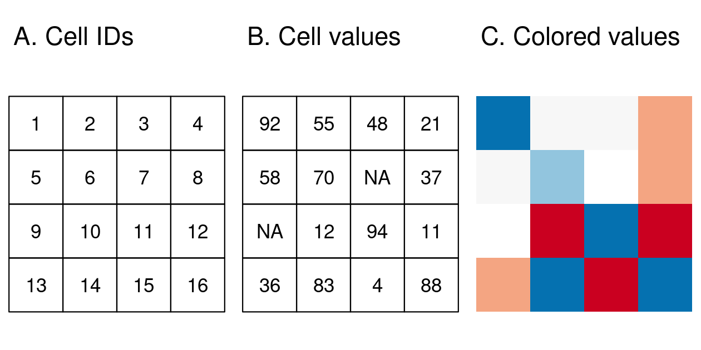

2 地理データと R
必須パッケージ
この章から実際の作業がはじまるので、ソフトウェアが必要となる。 まず、最新版の R (R 4.3.2 またはそれ以降のバージョン) がインストールされているコンピュータを用意しよう。 文章を読むだけでなく、各章のコードを実行して、ジオコンピュテーションのスキルを身につけることを勧める。
R のスクリプト、出力、その他ジオコンピュテーションに関連するものを保存するために、コンピュータに新しいフォルダを作成することから始めるとよいだろう。 また、学習をサポートするため、ソースコードをダウンロード またはクローンしておくと良い。 R コードを書く/実行する/テストする際には、 RStudio (ほとんどの人に推奨) または VS Code などの統合開発環境 (integrated development environment, IDE) をインストールすることを強く勧める。
R を初めて使う方は、R のコードを使ったジオコンピュテーションに入る前に、Garrett Grolemund の Hands on Programming with R や Introduction to R などの R 入門リソースに従うことを勧める。
これらのリソースには R のインストール方法が詳細に書かれており、Comprehensive R Archive Network (CRAN) から最新バージョンをダウンロードすることも書かれている。
下記の注記は、Mac と Linux について、ジオコンピュテーションするために R をインストールするための情報がある。
作業内容を整理し (例: RStudio プロジェクト)、スクリプトに chapter-02-notes.R などのわかりやすい名前を付けて、学習しながらコードを記録するとよい。
セットアップが完了したら、いよいよコードを実行する。 以下のパッケージをまだインストールしていない場合、まず以下のコマンドで最初にこの章で使用する基礎的な R パッケージをインストールする。5
install.packages("sf")
install.packages("terra")
install.packages("spData")
install.packages("spDataLarge", repos = "https://geocompr.r-universe.dev")本書の第 I 部を再現するために必要なパッケージは、コマンド remotes::install_github("geocompx/geocompkg") でインストールできる。
このコマンドは、remotes パッケージの関数 install_packages() を使用して、GitHub コードホスティング、バージョン、およびコラボレーション プラットフォームでホストされているソース コードをインストールする。
以下のコマンドを実行すると、本書全体を再現するために必要なすべての依存関係がインストールされる (警告: 数分かかる場合がある)。 remotes::install_github("geocompx/geocompkg", dependencies = TRUE)
この章で紹介するコードを実行するために必要なパッケージは、以下のように library() 関数で「読み込み」 (厳密には attach) をすることができる。
library(sf) の出力では、GEOS などの主要な地理ライブラリのバージョンなどが表示される。これらのライブラリについては、Section 2.2.1 で説明する。
他のパッケージには、この本で使用されるデータが含まれている。
library(spData) # 地理データをロード
library(spDataLarge) # 大きい地理データをロード2.1 イントロダクション
この章では、基本的な地理データモデルであるベクタとラスタについて説明する。(訳注: 本書では、GIS で用いられる vector は「ベクタ」と訳し、R のデータ形式の vector は「ベクトル」と訳す。) それぞれのデータモデルの背景にある理論や、データモデルが得意とする分野を紹介し、R での実際に演習する。
ベクタデータモデルは、点、線、ポリゴンを使って世界を表現する。 これらのデータセットには、境界が明確に定義されているため、ベクタデータセットは通常、高い精度を持つ (ただし、Section 2.5 で見るように、必ずしも正確ではない)。 ラスタデータモデルは、表面を一定の大きさのセルに分割している。 ラスタデータセットは、ウェブ地図で使用される背景画像の基本であり、航空写真や衛星リモートセンシング装置の発明以来、地理データの重要なソースである。 ラスタは、空間的に特定のフィーチャ (feature、地物とも訳される) を特定の解像度で集約したもので、空間的に一貫性があり、拡張性がある (世界中の多くのラスタデータセットが利用可能)。
どちらを使うべきだろうか？ その答えは、アプリケーションの領域によって変わってくる。
- 社会科学では、人間の居住地が不連続な境界線を持つ傾向があるため、ベクタデータが主流となる傾向がある
- 環境科学において、リモートセンシングデータを使うことも多いため、ラスタが主流となっている
ラスタデータセットとベクタデータセットは、どちらも多く使われており、併用することも可能である。 例えば、生態学者や人口統計学者などは、ベクタデータとラスタデータの両方を使うのが一般的である。 さらに、この 2 つの形式を相互に変換することも可能である (Section 6 参照)。 ベクタデータとラスタデータのどちらを使用するかは、次の章で説明するように、使用する前に基本的なデータモデルを理解することが重要である。 本書では、ベクタデータとラスタデータセットを扱うために、それぞれ sf と terra パッケージを使用している。
2.2 ベクタデータ
data.frame や matrix などと同じく R のクラスの一つである。
両者には、もちろん関連性もある。ベクタで重要な空間座標は、R ではベクトルオブジェクトで表される。
地理ベクタデータモデルは、座標参照系 (coordinate reference system, CRS) 内に位置する点に基づいている。 点は、バス停の位置のような独立したフィーチャ (地物) を表すことも、線やポリゴンのような複雑な幾何学的形状を形成するために連結されることもある。 点ジオメトリ (geometry、訳註: ISO 19125 では「形状」や「幾何形状」と訳されているが、本書ではジオメトリとする。) はほとんどの場合 2 次元のみで構成される (3 次元のジオメトリは \(z\) の値が追加され、多くの場合、海抜高度を表す)。
このシステムにおいて、例えば London は、座標 c(-0.1, 51.5) で表すことができる。
つまり、その位置は原点から東に \(-0.1\) 度、北に \(51.5\) 度である。
この場合の原点は、地理的 (緯度経度) CRS の経度 (longitude) 0 度 (本初子午線) と緯度 (latitude) 0 度 (赤道) にある (Figure 2.1、左図)。
また、同じ点を投影した CRS では、 British National Grid の「東経/北緯」の値はおよそc(530000, 180000) で、ロンドンが CRS の原点から 530 km 東、180 km 北に位置することを意味している。
これは視覚的にも確認することができ、幅 100 km の灰色の格子線に囲まれた正方形の領域である「ボックス」が 5 個強、ロンドンを表す点と原点を分けている (Figure 2.1、右のパネル)。
National Grid の起点が South West 半島の先の海上にあるため、英国内のすべての場所で正の東経と北緯の値を持つことになる。6 CRS については、Section 2.4 と Chapter 7 で説明する。 この章では、座標が原点からの距離を表す 2 つの数値からなり、通常は \(x\) と \(y\) の次元であることを知っていれば十分である。


FIGURE 2.1: 原点 (青丸) を基準にロンドン (赤 X) の位置を表したベクトル (点) データ。左図は、緯度経度 0° を原点とする地理的な CRS。右図は、South West Peninsula の西側の海を原点とする投影 CRS を表している。
sf パッケージは、地理ベクタデータ用のクラスと、以下に説明する地理計算のための重要な低レベルライブラリへのコマンドラインインターフェースを一貫した方法で提供する。
- GDAL は、Chapter 8 でカバーされる広範な地理データ形式の読み取り、書き込み、操作のためのものである。
- PROJ は、Chapter 7 で扱う内容の根幹をなす座標系変換のための強力なライブラリ。
- GEOS は、投影型 CRS を持つデータに対してバッファや重心の計算などの操作を行う平面ジオメトリエンジン、Chapter 5 でカバーする。
- S2 は、Google が開発した C++ で書かれた球面幾何学エンジンである。s2 パッケージ経由で、この章の Section 2.2.9 と Chapter 7 でカバーする。
これらのインターフェースに関する情報は、パッケージが最初にロードされたときに sf によって表示される。この章の最初にある library(sf) コマンドの下に表示されるメッセージ は、リンクされている GEOS、GDAL、PROJ ライブラリのバージョン (コンピュータや時期によって変わる) と S2 インターフェースがオンになっているかどうかという情報を教えてくれる。
低レベルライブラリを当前のことと思っているが、様々な地理ライブラリとの緊密な連携がなえれば、再現性のあるジオコンピュテーションは不可能だったであろう。
sf の特徴として、投影法未指定のデータで使用するデフォルトのジオメトリエンジンを変更することができる S2 のスイッチを切るには、sf::sf_use_s2(FALSE) というコマンドを使う。つまり、平面ジオメトリエンジン GEOS が、投影されていないデータに対するジオメトリ操作を含む、すべてのジオメトリ操作にデフォルトで使用されることになる。
Section 2.2.9 で見るように、平面幾何学は二次元の空間に基づいている。
GEOS などの平面ジオメトリエンジンは「平面」 (投影) 座標を、S2 などの球面ジオメトリエンジンは非投影 (緯度経度) 座標を想定している。
この章では、後続の章に備え、sf クラスを紹介する (GEOS インターフェースは Chapter 5 章で、GDAL インターフェースは Chapter 8 で説明する)。
2.2.1 シンプルフィーチャの概要
シンプルフィーチャ (simple feature、ISO 19125 では、feature は「地物」、simple feature は「単純地物」と訳されこともあるが、本書ではシンプルフィーチャで統一する。) は、Open Geospatial Consortium (OGC) が開発・推奨するオープンスタンダードであり、その活動は後の章で再確認することになる (Section 8.2)。 シンプルフィーチャは、様々なジオメトリ型を表現する階層的なデータモデルである。 仕様でサポートされている 18 種類のジオメトリのうち、地理研究の大部分で使用されているのは 7 種類のみである (Figure 2.2 を参照)。 これらのコアなジオメトリ型は、R パッケージの sf で完全にサポートされている (Pebesma 2018)。7

FIGURE 2.2: sf が完全にサポートするシンプルフィーチャ型
sf は、点、線、ポリゴン、およびそれらの「複合」バージョン (同じ種類のフィーチャをまとめて 1 つのフィーチャとするもの) という一般的なベクタフィーチャのタイプをすべて表現できる (ラスタデータクラスは sf ではサポートされていない)。 また、sf はジオメトリコレクションをサポートしており、1 つのオブジェクトに複数のジオメトリ型を格納することができる。 sf は、データクラスの sp (Pebesma and Bivand 2023a)、GDAL と PROJ を通したデータ読み書きの rgdal (Bivand, Keitt, and Rowlingson 2023)、GEOS を通した空間演算の rgeos (Bivand and Rundel 2023) という 3 パッケージで提供されていたものと同じ機能 (およびそれ以上) を提供する。
Chapter 1 の繰り返しになるが、R の地理パッケージは低レベルのライブラリとのインターフェースとの長い歴史がある。sf はこの伝統を受け継ぎ、最新バージョンの幾何演算 GEOS、地理データファイルの読み書きのための GDAL、CRS の表現と変換のための PROJ ライブラリと統一されたインターフェースを提供する。
s2、すなわち「Google の球面幾何学ライブラリ s2 への R インタフェース」を通して、sf は高速で正確な「非平面形状の測定と操作」 (Bivand 2021) にアクセスすることができる。
2021年6月に公開された sf バージョン 1.0.0 からは、地理 (経度・緯度) 座標系を持つジオメトリに対してデフォルトで s2 機能が使われるようになった。これは、sf 独自の特徴であり、Python パッケージ GeoPandas など、ジオメトリ演算に GEOS にしか対応していない空間ライブラリとは異なる。
s2 については、以降の章で説明する。
sf は、地理計算のための複数の強力なライブラリを単一のフレームワークに統合しており、これのおかげで高性能ライブラリを用いた再現可能な地理データ解析の世界への「参入障壁」がかなり下げられたと言える。 sf の機能は、ウェブサイト (r-spatial.github.io/sf/)の 7 つの vignette で詳しく説明されている。 これらは、以下のようにオフラインで見ることができる。(訳注: sf などを含めた日本語版の vignette を参照。)
最初の vignette で説明されているように、R のシンプルフィーチャオブジェクトはデータフレームに格納され、地理データは通常 ‘geom’ または ‘geometry’ という名前の特別な列を占める。
本章の冒頭で読み込んだ spData (Bivand, Nowosad, and Lovelace 2023) が提供する world データセットを使って、sf オブジェクトの内容とその動作について説明する。
world は、空間と属性の列を含む「sf データフレーム」で、属性列の名前は関数 names() によって返される (この例の最後の列は地理情報を含んでいる)。
class(world)
#> [1] "sf" "tbl_df" "tbl" "data.frame"
names(world)
#> [1] "iso_a2" "name_long" "continent" "region_un" "subregion" "type"
#> [7] "area_km2" "pop" "lifeExp" "gdpPercap" "geom"この geom 列の内容は、sf オブジェクトに空間的な力を与える。world$geom は、国別ポリゴンのすべての座標を含むリスト列である。
sf オブジェクトは、plot() を使ってすぐにプロットすることができる。
plot() は、R のデフォルト (Base R) の一部であり、他のパッケージが拡張することのできるジェネリック関数というものである。
sf は、エクスポートされていない (ユーザからはほとんどの場合隠されている) plot.sf() 関数を含んでおり、以下のコマンドでは裏でこの関数が呼ばれ、Figure 2.3 を作成する。
plot(world)
FIGURE 2.3: sf パッケージを用いた世界の地図で、各属性ごとのファセットを表示。
多くの GIS プログラムの場合、地理的オブジェクトに対してデフォルトで単一のマップを作成する。一方、sf オブジェクトを plot() すると、データセットの各変数に対してマップが作成されることに注意しておこう。(訳注: このように、属性値を変えた同じ図を並べることを R では「ファセット」(facet) という。ファセットは、元々は切り子という意味。)
この動作は、さまざまな変数の空間分布を調べるのに有効であり、Section 2.2.3 で詳しく説明する。
より広く言えば、地理的なオブジェクトを空間的な力を持つ通常のデータフレームとして扱うことは、特にデータフレームの扱いに慣れている場合、多くの利点がある。
例えば、よく使われる summary() 関数では、world オブジェクト内の変数の概要が表示され、便利である。
summary(world["lifeExp"])
#> lifeExp geom
#> Min. :50.6 MULTIPOLYGON :177
#> 1st Qu.:65.0 epsg:4326 : 0
#> Median :72.9 +proj=long...: 0
#> Mean :70.9
#> 3rd Qu.:76.8
#> Max. :83.6
#> NA's :10summary() コマンドでは、1 つの変数しか選択していないが、ジオメトリのレポートも出力される。
これは、sf オブジェクトのジオメトリ列の「スティッキー」な動作を示している。スティッキーとは、Section 3.2 で見るように、ユーザーが意図的に削除しない限り、ジオメトリが保持されるという性質のことである。
この結果は、world に含まれる非空間的データと空間的データの両方を簡単に要約したものである。すべての国に対して、平均寿命は 71 歳 (51 歳未満から 83 歳以上の範囲、中央値は 73 歳) である。
MULTIPOLYGON という単語は、world オブジェクトに含まれるフィーチャ (国) のジオメトリ型を表している。
この表現は、インドネシアやギリシャのような島を持つ国には必要である。(訳注: 日本も当然ながら当てはまる。)
その他のジオメトリ型については、Section 2.2.4 で説明する。
このシンプルフィーチャオブジェクトの基本的な動作と内容を深く見てみると、「spatial data frame」と考えるのが妥当であることがわかる。
以下のコードは、world オブジェクトの最初の 2 行と最初の 3 列だけを含む sf オブジェクトを返す方法を示している。
この出力は、通常の data.frame と比較して、2つの大きな違いがある。それは、追加の地理的メタデータ (Geometry type、Dimension、Bounding box、および座標参照系情報) が含まれていることと、ここでは geom という名前の「幾何学列」が存在することである。
world_mini = world[1:2, 1:3]
world_mini
#> Simple feature collection with 2 features and 3 fields
#> Geometry type: MULTIPOLYGON
#> Dimension: XY
#> Bounding box: xmin: -180 ymin: -18.3 xmax: 180 ymax: -0.95
#> Geodetic CRS: WGS 84
#> # A data frame: 2 × 4
#> iso_a2 name_long continent geom
#> * <chr> <chr> <chr> <MULTIPOLYGON [°]>
#> 1 FJ Fiji Oceania (((-180 -16.6, -180 -16.5, -180 -16, -180 -16.1, -…
#> 2 TZ Tanzania Africa (((33.9 -0.95, 31.9 -1.03, 30.8 -1.01, 30.4 -1.13,…「シンプル」であるべきクラスシステムにしては、かなり複雑に見えるだろう。 しかし、このように物事を整理し、ベクタ地理データセットを扱うのに sf を使うには、それなりの理由がある。
sf パッケージがサポートする各ジオメトリ型について説明する前に、sf オブジェクトの構成要素を理解するために基本に立ち返ってみよう。
Section 2.2.5 は、シンプルフィーチャオブジェクトが、特殊なジオメトリ列を持つデータフレームであることを示している。
これらの空間列は、geom または geometry という列名になっている。world$geom は、上記の world オブジェクトの空間要素を指す。
これらのジオメトリ列は、クラス sfc の「リスト列」である (Section 2.2.7 を参照)。
sfc オブジェクトは、sfg (simple feature geometry、Section 2.2.6 で説明) というクラスの 1 つ以上のオブジェクトから構成されている。
シンプルフィーチャの空間成分の働きを理解するためには、シンプルフィーチャのフィーチャを理解することが必須である。
このため、現在サポートされているシンプルフィーチャのフィーチャタイプについて Section 2.2.4 で説明した後、sfg および sfc オブジェクトをベースとする sf オブジェクトを使用して R でこれらを表現する方法について説明する。
world_mini = world[1:2, 1:3] というコマンドで = を使って world_mini という新しいオブジェクトを作成している。
これは代入という。
同じ結果を得るために同等のコマンドは world_mini <- world[1:2, 1:3] である。
「矢印代入」の方が一般的だが、「イコール代入」の方が入力しやすく、Python や JavaScript などのよく使われる言語との互換性もあり教えやすいので、ここでは「イコール代入」を使っている。
どちらを使うかは、一貫性がある限り、好みの問題である (styler などのパッケージを使えば、スタイルを変更することが可能)。
2.2.2 なぜシンプルフィーチャなのか？
シンプルフィーチャは、QGIS や PostGIS など、多くの GIS アプリケーションのデータ構造の根幹をなすデータモデルとして広く支持されている。 データモデルを使用することで、例えば空間データベースからのインポートや空間データベースへのエクスポートなど、他のセットアップとの相互移行が可能になることが大きなメリットである。
具体的には、「なぜ sf パッケージを使うのか ?」という質問になる。 答えはたくさんある (シンプルフィーチャモデルの利点と連動している)。
- 高速なデータの読み書きが可能
- プロット性能の向上
- sf オブジェクトは、ほとんどの操作でデータフレームとして扱うことができる
-
sf 関数名は比較的一貫性があり、直感的に理解できる (すべて
st_で始まる)。 -
sf 関数は
|>演算子と組み合わせることができ、R パッケージの tidyverse コレクションとうまく機能する。
sf が tidyverse パッケージをサポートしていることは、read_sf() 関数で分かる。この関数は、地理ベクタを読むための関数で、Section 8.3.1 で詳しく解説する。
関数 st_read() は、Base R の data.frame に格納された属性を返すだけである (長いメッセージを表示する。以下のコードチャンクには表示していない。)。一方、read_sf() は、データを tidyverse の tibble として返し、表示は少ない。
以下、実際の例を紹介する (地理ベクタデータの読み方については Section 8.3.1 を参照)。
world_dfr = st_read(system.file("shapes/world.gpkg", package = "spData"))
#> Reading layer `world' from data source
#> `/usr/local/lib/R/site-library/spData/shapes/world.gpkg' using driver `GPKG'
#> Simple feature collection with 177 features and 10 fields
#> Geometry type: MULTIPOLYGON
#> Dimension: XY
#> Bounding box: xmin: -180 ymin: -89.9 xmax: 180 ymax: 83.6
#> Geodetic CRS: WGS 84
world_tbl = read_sf(system.file("shapes/world.gpkg", package = "spData"))
class(world_dfr)
#> [1] "sf" "data.frame"
class(world_tbl)
#> [1] "sf" "tbl_df" "tbl" "data.frame"Chapter 3 で tidyverse 関数を使って sf オブジェクトを操作する方法を示す通り、sf は今や R での空間ベクタデータの分析に最適なパッケージである (spatstat パッケージは、多くの空間統計用の関数を提供するものの最適とは言えない。)。
spatstat と terra は、空間統計のための多くの関数を提供するパッケージ・エコシステムであり、どちらもベクトル地理データクラスを持っているが、ベクタを扱う点においては sf と同じレベルの取り込みはしていない。
多くの人気パッケージが sf をベースに構築されており、前章の Section 1.5 にあるように、1日あたりのダウンロード数でその人気が上昇していることが示されている。
2.2.3 基本的な地図
基本的な地図は sf の plot() で作成する。
デフォルトでは、Figure 2.4 の左側のパネルに示されているように、オブジェクトの各変数に対して1つのサブプロット、複数パネルのプロットが作成される。
プロットされるオブジェクトが単一の変数である場合、連続した色を持つ凡例または「キー」が生成される (右側のパネルを参照)。
plot() では、 引数 col と border で色を指定することができる。


FIGURE 2.4: sf を使ったプロット。複数変数 (左) と単一変数 (右)。
プロットは、add = TRUE を設定することで、既存の画像にレイヤとして追加される。8
このことを示すために、また、属性と空間データ操作に関する Chapter 3 と Chapter 4 の内容を理解するために、次のコードチャンクはアジアの国々をフィルターして、1つのフィーチャに結合している。
world_asia = world[world$continent == "Asia", ]
asia = st_union(world_asia)世界地図の上にアジア大陸をプロットすることができるようになった。
add = TRUE が動作するためには、最初のプロットは 1 つのファセットだけでなければならないことに注意しておこう。
最初のプロットにキーがある場合は、reset = FALSE を使用する必要がある。

FIGURE 2.5: 世界各国の上にレイヤとしてアジアを加えたプロット。
plot() 関数は、実行速度が速く、必要なコード行数も少ないのであるが、機能は限定的である。
より高度な地図作成には、tmap (Tennekes 2018) などの可視化専用パッケージの利用を勧める (Chapter 9 参照)。
sf の plot() メソッドでマップを修正する方法はいろいろある。
sf は R の基本的な描画メソッド plot() を拡張しているので、plot() の引数は sf オブジェクトでも動作する (main = などの引数の情報は、?graphics::plot と ?par を参照)。9
Figure 2.6 は、この柔軟性を、世界地図の上に、直径 (cex = で設定) が各国の人口を表す円を重ねることで表現している。
この図の非投影版は、以下のコマンドで作成できる (本章末の練習問題と、スクリプト 02-contplot.R を使って Figure 2.6 を再現することができる。)
plot(world["continent"], reset = FALSE)
cex = sqrt(world$pop) / 10000
world_cents = st_centroid(world, of_largest = TRUE)
plot(st_geometry(world_cents), add = TRUE, cex = cex)
FIGURE 2.6: 国別大陸 (塗りつぶし色で表現) と2015年の人口 (円で表現、面積は人口に比例)
上記のコードでは、関数 st_centroid() を使って、あるジオメトリ型 (ポリゴン) を別の型 (点) に変換している (Chapter 5 参照)。引数 cex で見た目を変化させることができる。
sf の plot メソッドには、地理データに特有の引数もある。
sf オブジェクトをコンテクストでプロットするために、以下の例で expandBB を使用してみよう。
expandBB は長さ 4 の数値ベクトルを取り、プロットの外接枠をゼロから相対的に下、左、上、右の順序で拡張する。
これを利用して、インドを巨大なアジアの隣国 (東にある中国に重点を置く) の文脈でプロットすると、次のコードチャンクで Figure 2.7 を生成する。 (プロットにテキストを追加することについては、以下の演習を参照)。10
india = world[world$name_long == "India", ]
plot(st_geometry(india), expandBB = c(0, 0.2, 0.1, 1), col = "gray", lwd = 3)
plot(st_geometry(world_asia), add = TRUE)
FIGURE 2.7: インドの文脈で、expandBB論を実証。
プロットコードでインドを強調するために lwd を使用していることに注意。
さまざまな種類のジオメトリを表現するためのその他の視覚化技術については、Section 9.2 を参照。なお、ジオメトリについては次のセクションで解説する。
2.2.4 ジオメトリの型
ジオメトリは、シンプルフィーチャを構成する基本的な要素である。
R のシンプルフィーチャは、sf パッケージがサポートする 18 種類のジオメトリ型のいずれかを取ることができる。
この章では、最もよく使われる以下の 7 つの型に焦点を当てる: POINT、LINESTRING、POLYGON、MULTIPOINT、MULTILINESTRING、MULTIPOLYGON、GEOMETRYCOLLECTION。
一般に、シンプルフィーチャの符号化方式としては、WKB (well-known binary) や WKT (well-known text) が標準的である。 WKB の表現は通常、コンピュータで読みやすい16進数の文字列である。 このため、GIS や空間データベースでは、ジオメトリオブジェクトの転送や保存に WKB を使用している。 一方、WKT は、シンプルフィーチャを人間が読みやすいテキストマークアップで記述したものである。 どちらの形式も交換可能であり、ここでは当然 WKT で表す。
各ジオメトリ型の基本は点である。
点 (point) とは、2 次元、3 次元、4 次元空間 (詳しくは vignette("sf1") を参照、訳注: 日本語版) の座標で、次のようなものである (Figure 2.8 左図)。
POINT (5 2)
線 (linestring、polyline) とは、例えば、点と点を結ぶ直線の列のことである (Figure 2.8 中央)。
LINESTRING (1 5, 4 4, 4 1, 2 2, 3 2)
ポリゴン (polygon) とは、閉じた非交差環を形成する点の並びのことである。 「閉じた」とは、ポリゴンの最初と最後の点が同じ座標を持つことを意味する (Figure 2.8 右図)11
- 穴のないポリゴン
POLYGON ((1 5, 2 2, 4 1, 4 4, 1 5))

FIGURE 2.8: 点、線、ポリゴンのジオメトリ。
ここまでは、1 つのフィーチャに 1 つの幾何学的実体しかないジオメトリを作成した。 しかし、シンプルフィーチャでは、各ジオメトリ型の「複合」バージョンを使用して、1 つのフィーチャに複数のジオメトリを存在させることもできる。
- 複合点
MULTIPOINT (5 2, 1 3, 3 4, 3 2) - 複合線
MULTILINESTRING ((1 5, 4 4, 4 1, 2 2, 3 2), (1 2, 2 4)) - 複合ポリゴン
MULTIPOLYGON (((1 5, 2 2, 4 1, 4 4, 1 5), (0 2, 1 2, 1 3, 0 3, 0 2)))

FIGURE 2.9: MULTI*ジオメトリの説明図。
最後に、ジオメトリコレクションには、(複合の) 点や線を含むジオメトリの任意の組み合わせを含めることができる (Figure 2.10 を参照)。
- ジオメトリコレクション
GEOMETRYCOLLECTION (MULTIPOINT (5 2, 1 3, 3 4, 3 2), LINESTRING (1 5, 4 4, 4 1, 2 2, 3 2))

FIGURE 2.10: ジオメトリコレクションの説明図
2.2.5 sf クラス
シンプルフィーチャは、フィーチャと非フィーチャという 2 つの部分からなる。
Figure 2.11 は sf オブジェクトの作成方法を示している。ジオメトリは sfc オブジェクトから、属性は data.frame または tibble から取得される。12

FIGURE 2.11: sf オブジェクトの構成。
フィーチャ以外の属性は、フィーチャの名称や、測定値、グループなどの属性を表す。
属性を説明するために、2023年6月21日の London の気温が 25℃ であることを表してみたい。
この例では、ジオメトリ (座標) と、3 つの異なるクラスを持つ属性 (地名、気温、日付) が含まれている。13
クラス sf のオブジェクトは、属性 (data.frame) とシンプルフィーチャ列 (sfc) を組み合わせて、そのようなデータを表現するものである。
これらは、下図のように st_sf() で、London の例を作成する。
lnd_point = st_point(c(0.1, 51.5)) # sfg object
lnd_geom = st_sfc(lnd_point, crs = "EPSG:4326") # sfc object
lnd_attrib = data.frame( # data.frame object
name = "London",
temperature = 25,
date = as.Date("2023-06-21")
)
lnd_sf = st_sf(lnd_attrib, geometry = lnd_geom) # sf objectこのコードでは、何が起きるのだろうか? まず、座標を使ってシンプルフィーチャ (sfg) を作成した。
次に、ジオメトリをシンプルフィーチャ列 (sfc) に変換し、CRS を設定した。
第三に、属性を data.frame に格納し、sfc のオブジェクトと st_sf() で結合した。
この結果、以下に示すように、sf オブジェクトが生成される (一部の出力は省略している)。
lnd_sf
#> Simple feature collection with 1 features and 3 fields
#> ...
#> name temperature date geometry
#> 1 London 25 2023-06-21 POINT (0.1 51.5)
class(lnd_sf)
#> [1] "sf" "data.frame"その結果、sf のオブジェクトは、実際には sf と data.frame という 2 つのクラスを持っていることがわかった。
シンプルフィーチャとは、単純にデータフレーム (四角い表) であるが、空間属性がリスト列に格納されている。この列は、通常 Section 2.2.1 で説明するように、geometry または geom という名称である。
この二面性が、「シンプルフィーチャ」のコンセプトの中心である。
ほとんどの場合、sf は data.frame のように扱われ、動作することができる。
要するに、シンプルフィーチャとはデータフレームに空間的な拡張を施したものである。
2.2.6 シンプルフィーチャ・ジオメトリ (sfg)
sfg クラスは、R のさまざまなシンプルフィーチャの種類を表する。点、線、ポリゴン (および複合点などの「複合」対応)、またはジオメトリコレクションである。
通常は、既存の空間ファイルを読み込むだけなので、自分でジオメトリを作成する面倒な作業は必要ない。
しかし、もし必要であれば、シンプルフィーチャオブジェクト (sfg) を一から作成するための関数群が用意されている。
これらの関数の名前はシンプルで一貫しており、すべて st_ という接頭辞で始まり、小文字でジオメトリ型の名前で終わる。
- 点:
st_point() - 線:
st_linestring() - ポリゴン:
st_polygon() - 複合点:
st_multipoint() - 複合線:
st_multilinestring() - 複合ポリゴン:
st_multipolygon() - ジオメトリコレクション:
st_geometrycollection()
sfg オブジェクトは、3 つの基本的な R データ型から作成することができる。
- 数値ベクトル: ひとつの点
- 行列: 点の集合で、各行が点、多点、または線分を表す。
- リスト: 行列、マルチ文字列、ジオメトリコレクションなどのオブジェクトの集合体
関数 st_point() は、数値ベクトルから単一の点を作成する。
st_point(c(5, 2)) # XY point
#> POINT (5 2)
st_point(c(5, 2, 3)) # XYZ point
#> POINT Z (5 2 3)
st_point(c(5, 2, 1), dim = "XYM") # XYM point
#> POINT M (5 2 1)
st_point(c(5, 2, 3, 1)) # XYZM point
#> POINT ZM (5 2 3 1)その結果、長さ 2、3、4 のベクトルからそれぞれ XY (2 次元座標)、XYZ (3 次元座標)、XYZM (3 次元に追加変数、通常は測定精度) の点タイプが生成されることがわかった。
XYM タイプは、dim 引数 (dimension の略) で指定する必要がある。
これに対して、複合点 (st_multipoint()) と複合線 (st_linestring()) のオブジェクトの場合は、行列 (matrix) を使用する。
# rbind 関数により行列の作成が簡単になった。
## MULTIPOINT
multipoint_matrix = rbind(c(5, 2), c(1, 3), c(3, 4), c(3, 2))
st_multipoint(multipoint_matrix)
#> MULTIPOINT ((5 2), (1 3), (3 4), (3 2))
## LINESTRING
linestring_matrix = rbind(c(1, 5), c(4, 4), c(4, 1), c(2, 2), c(3, 2))
st_linestring(linestring_matrix)
#> LINESTRING (1 5, 4 4, 4 1, 2 2, 3 2)最後に、複合線、(複合) ポリゴン、ジオメトリコレクションの作成には、リストを使用する。
## POLYGON
polygon_list = list(rbind(c(1, 5), c(2, 2), c(4, 1), c(4, 4), c(1, 5)))
st_polygon(polygon_list)
#> POLYGON ((1 5, 2 2, 4 1, 4 4, 1 5))
## 穴あきポリゴン
polygon_border = rbind(c(1, 5), c(2, 2), c(4, 1), c(4, 4), c(1, 5))
polygon_hole = rbind(c(2, 4), c(3, 4), c(3, 3), c(2, 3), c(2, 4))
polygon_with_hole_list = list(polygon_border, polygon_hole)
st_polygon(polygon_with_hole_list)
#> POLYGON ((1 5, 2 2, 4 1, 4 4, 1 5), (2 4, 3 4, 3 3, 2 3, 2 4))
## MULTILINESTRING
multilinestring_list = list(rbind(c(1, 5), c(4, 4), c(4, 1), c(2, 2), c(3, 2)),
rbind(c(1, 2), c(2, 4)))
st_multilinestring(multilinestring_list)
#> MULTILINESTRING ((1 5, 4 4, 4 1, 2 2, 3 2), (1 2, 2 4))
## MULTIPOLYGON
multipolygon_list = list(list(rbind(c(1, 5), c(2, 2), c(4, 1), c(4, 4), c(1, 5))),
list(rbind(c(0, 2), c(1, 2), c(1, 3), c(0, 3), c(0, 2))))
st_multipolygon(multipolygon_list)
#> MULTIPOLYGON (((1 5, 2 2, 4 1, 4 4, 1 5)), ((0 2, 1 2, 1 3, 0 3, 0 2)))
## GEOMETRYCOLLECTION
geometrycollection_list = list(st_multipoint(multipoint_matrix),
st_linestring(linestring_matrix))
st_geometrycollection(geometrycollection_list)
#> GEOMETRYCOLLECTION (MULTIPOINT (5 2, 1 3, 3 4, 3 2),
#> LINESTRING (1 5, 4 4, 4 1, 2 2, 3 2))2.2.7 シンプルフィーチャ列 (sfc)
1 つの sfg オブジェクトには、1 つのシンプルフィーチャだけが含まれている。
シンプルフィーチャ列 (simple feature column, sfc) は、sfg オブジェクトのリストであり、さらに、使用中の CRS に関する情報を含めることができる。
例えば、単純な2つのフィーチャを2つのフィーチャを持つ1つの物体に結合するには、st_sfc() 関数を使用することができる。
sfc は sf データフレームのジオメトリ列を表すので、これは重要である。
# sfc POINT
point1 = st_point(c(5, 2))
point2 = st_point(c(1, 3))
points_sfc = st_sfc(point1, point2)
points_sfc
#> Geometry set for 2 features
#> Geometry type: POINT
#> Dimension: XY
#> Bounding box: xmin: 1 ymin: 2 xmax: 5 ymax: 3
#> CRS: NA
#> POINT (5 2)
#> POINT (1 3)ほとんどの場合、sfc オブジェクトは、同じジオメトリ型のオブジェクトを含んでいる。
したがって、ポリゴン型の sfg オブジェクトをシンプルフィーチャ列に変換すると、ポリゴン型の sfc オブジェクトもできてしまい、st_geometry_type() で確認することができる。
同様に、multilinestring のジオメトリ列は、multilinestring 型の sfc オブジェクトになる。
# sfc POLYGON
polygon_list1 = list(rbind(c(1, 5), c(2, 2), c(4, 1), c(4, 4), c(1, 5)))
polygon1 = st_polygon(polygon_list1)
polygon_list2 = list(rbind(c(0, 2), c(1, 2), c(1, 3), c(0, 3), c(0, 2)))
polygon2 = st_polygon(polygon_list2)
polygon_sfc = st_sfc(polygon1, polygon2)
st_geometry_type(polygon_sfc)
#> [1] POLYGON POLYGON
#> 18 Levels: GEOMETRY POINT LINESTRING POLYGON MULTIPOINT ... TRIANGLE
# sfc MULTILINESTRING
multilinestring_list1 = list(rbind(c(1, 5), c(4, 4), c(4, 1), c(2, 2), c(3, 2)),
rbind(c(1, 2), c(2, 4)))
multilinestring1 = st_multilinestring((multilinestring_list1))
multilinestring_list2 = list(rbind(c(2, 9), c(7, 9), c(5, 6), c(4, 7), c(2, 7)),
rbind(c(1, 7), c(3, 8)))
multilinestring2 = st_multilinestring((multilinestring_list2))
multilinestring_sfc = st_sfc(multilinestring1, multilinestring2)
st_geometry_type(multilinestring_sfc)
#> [1] MULTILINESTRING MULTILINESTRING
#> 18 Levels: GEOMETRY POINT LINESTRING POLYGON MULTIPOINT ... TRIANGLEまた、異なるジオメトリ型の sfg オブジェクトから、sfc オブジェクトを作成することも可能である。
# sfc GEOMETRY
point_multilinestring_sfc = st_sfc(point1, multilinestring1)
st_geometry_type(point_multilinestring_sfc)
#> [1] POINT MULTILINESTRING
#> 18 Levels: GEOMETRY POINT LINESTRING POLYGON MULTIPOINT ... TRIANGLE前述したように、sfc のオブジェクトは、さらに CRS の情報を格納することができる。
デフォルト値は、NA (Not Available) である。st_crs() で確認できる。
st_crs(points_sfc)
#> Coordinate Reference System: NAsfc オブジェクトのすべてのジオメトリは、同じ CRS を持つ必要がある。
CRS は st_sfc() (または st_sf()) の crs 引数で指定できる。これは crs = "EPSG:4326" のようなテキスト文字列として提供される CRS 識別子を取る (他の CRS 表現とこの意味の詳細については Section 7.2 を参照)。
2.2.8 sfheaders パッケージ
sfheaders は、sf オブジェクトの構築、変換、操作を高速化する R パッケージである (Cooley 2020)。
これは、ベクトル、行列、データフレームから sf オブジェクトを、 sf ライブラリに依存せずに高速に構築することに重点を置いており、 ヘッダファイルを通じてその基礎となる C++ コードを公開する (sfheaders という名前はこのためである。)。
このアプローチにより、他の人がコンパイルされた高速に動作するコードを使って拡張することが可能になる。
sfheaders のコア関数すべてに対して、対応する C++ の実装があり、その説明は Cpp vignette で説明されている。
多くの人にとって、R の関数は、パッケージの計算速度の恩恵を受けるのに十分すぎるほどだろう。
sfheaders は sf とは別に開発されたが、完全に互換性があり、前のセクションで説明したタイプの有効な sf オブジェクトを作成することを目的としている。
sfheaders の最も単純な使用例は、sfg、sfc、sf オブジェクトの構築例とともに、以下のコードチャンクで示されている。
-
sfg_POINTに変換されたベクトル -
sfg_LINESTRINGに変換された行列 -
sfg_POLYGONに変換されたデータフレーム
まず、最も単純な sfg オブジェクトを作成する。これは、v というベクタに割り当てられた、1 つの座標ペアである。
v = c(1, 1)
v_sfg_sfh = sfheaders::sfg_point(obj = v)
v_sfg_sfh # sf をロードせずに出力
#> [,1] [,2]
#> [1,] 1 1
#> attr(,"class")
#> [1] "XY" "POINT" "sfg" 上の例では、sf が読み込まれていないときに sfg オブジェクト v_sfg_sfh が出力され、その基本的な構造を示している。
sf が読み込まれた場合 (今回のように)、上記のコマンドの結果は sf のオブジェクトと区別がつかない。
v_sfg_sf = st_point(v)
print(v_sfg_sf) == print(v_sfg_sfh)
#> POINT (1 1)
#> POINT (1 1)
#> [1] TRUE次の例は、sfheaders が行列とデータフレームから sfg オブジェクトを作成する方法を示している。
# matrices
m = matrix(1:8, ncol = 2)
sfheaders::sfg_linestring(obj = m)
#> LINESTRING (1 5, 2 6, 3 7, 4 8)
# data_frames
df = data.frame(x = 1:4, y = 4:1)
sfheaders::sfg_polygon(obj = df)
#> POLYGON ((1 4, 2 3, 3 2, 4 1, 1 4))オブジェクト v、m、df を再利用して、以下のように簡単な特徴列 (sfc) を作ることもできる (出力は示していない)。
sfheaders::sfc_point(obj = v)
sfheaders::sfc_linestring(obj = m)
sfheaders::sfc_polygon(obj = df)同様に、sf オブジェクトも以下のように作成することができる。
sfheaders::sf_point(obj = v)
sfheaders::sf_linestring(obj = m)
sfheaders::sf_polygon(obj = df)いずれの例も CRS は定義されていない。 もし、sf 関数を使った計算や幾何演算をする予定があるのなら、CRS を設定することを勧める (詳しくは、Chapter 7 参照)。
df_sf = sfheaders::sf_polygon(obj = df)
st_crs(df_sf) = "EPSG:4326"また、sfheaders は sf オブジェクトの「分解」と「再構築」を得意としている。つまり、ジオメトリ列を、各頂点の座標とジオメトリフィーチャ (および複数フィーチャ) の ID に関するデータを含むデータフレームに変換するのである。
Chapter 5 で取り上げた、異なるタイプのジオメトリ列を「キャスト」する際に、高速かつ信頼性の高い処理を行うことができる。
パッケージの documentation やこの本のために開発されたテストコードでのベンチマークでは、このような操作に対して sf パッケージよりもはるかに高速であることが示されている。
2.2.9 S2 による球面幾何学操作
球面幾何学エンジンは、世界が丸いという事実に基づいているが、2点間の直線やポリゴンに囲まれた面積の計算など、地盤計算のための簡単な数学的手続きは、平面 (投影) 幾何学を前提としている。 sf バージョン 1.0.0 以降、R は Google の S2 球面幾何エンジンとのインターフェース s2 インターフェースパッケージにより、球面幾何の操作を「すぐに」(かつデフォルトで) サポートする。 S2 は、離散型グローバルグリッドシステム (Discrete Global Grid System, DGGS) の例として、おそらく最もよく知られている。 もう一つの例は、H3 グローバルな六角形の階層的な空間インデックスである (Bondaruk, Roberts, and Robertson 2020)。
S2 は、文字列を使って地球上の任意の場所を記述できる機能があり、これは役立つ場合もあるかもしれない。しかし、 sf が S2 を採用する利点は、距離、バッファ、面積計算などの計算のためのドロップイン関数を提供している点である。これは sf のドキュメントで説明されており、コマンド vignette("sf7") で開くことができる (訳注: 日本語版)。
sf は、S2 に対して、オンとオフの 2 つのモードで動作させることができる。 S2 ジオメトリエンジンはデフォルトでオンになっている。以下のコマンドで確認することができる。
sf_use_s2()
#> [1] TRUEジオメトリエンジンをオフにした結果の例を以下に示す。この章で作成した india オブジェクトの周りにバッファを作成する (S2 をオフにしたときに発せられる警告に注意) (Figure 2.12)。
india_buffer_with_s2 = st_buffer(india, 1) # 1 メートル
sf_use_s2(FALSE)
#> Spherical geometry (s2) switched off
india_buffer_without_s2 = st_buffer(india, 1) # 1 メートル
#> Warning in st_buffer.sfc(st_geometry(x), dist, nQuadSegs, endCapStyle =
#> endCapStyle, : st_buffer does not correctly buffer longitude/latitude data
#> dist is assumed to be in decimal degrees (arc_degrees).FIGURE 2.12: S2 ジオメトリエンジンをオフにした場合の結果の例。インド周辺のバッファを同じコマンドで作成したが、紫色のポリゴンオブジェクトは S2 をオンにして作成したため、バッファは 1 m になった。大きい薄緑色のポリゴンは S2 をオフにして作成したため、バッファは 1 度となり、不正確。
Figure 2.12 右は、1 度のバッファは、india ポリゴンの周囲を等しく囲んではいないため不正確である (詳細は、Section 7.4 を参照)。
本書では、特に明記していない限り、S2 がオンになっていることを前提に説明する。 以下のコマンドで再度オンにする。
sf_use_s2(TRUE)
#> Spherical geometry (s2) switched on#> Error in s2_geography_from_wkb ...」のようなエラーメッセージが表示されたら、S2 をオフにした後に、エラーメッセージを発生させたコマンドを再度試してみる価値があるかもしれない。
プロジェクト全体で S2 を無効にするには、プロジェクトのルートディレクトリ (メインフォルダ) に .Rprofile というファイルを作成し、その中に sf::sf_use_s2(FALSE) というコマンドを記述すればよい。
2.3 ラスタデータ
空間ラスタデータモデルは、連続した格子状のセル (ピクセルとも呼ばれる; Figure 2.13 :A) で世界を表現する。 このデータモデルでは、各セルが同じ一定の大きさを持つ、いわゆる正方形のグリッドを指すことが多く、本書では正方形のグリッドにのみ焦点を当てることにする。 しかし、他にも回転格子、せん断格子、直線格子、曲線格子など、いくつかの種類の格子が存在する (Pebesma and Bivand (2023c) の第 1 章、または Tennekes and Nowosad (2024) の第 2 章を参照のこと)。
ラスタデータモデルは通常、ラスタヘッダと、等間隔に並んだセル (ピクセルとも呼ばれる; Figure 2.13 :A) を表す行列 (行と列を持つ) から構成される。14 ラスタヘッダは、CRS、範囲、原点を定義する。 原点は、多くの場合、行列の左下隅の座標である (ただし、terra パッケージでは、デフォルトで左上隅が使用される (Figure 2.13:B))。 ヘッダは、列数、行数、セルサイズの解像度によって範囲を定義する。
解像度 (resolution) は、以下の式から得られる。
\[ \text{resolution} = \frac{\text{xmax} - \text{xmin}}{\text{ncol}}, \frac{\text{ymax} - \text{ymin}}{\text{nrow}} \]
原点から出発して、セルの ID を使うか (Figure 2.13:B)、明示的に行と列を指定することで、1 つのセルに対して簡単にアクセスし、変更することができる。 この行列表現により、直方体のベクタポリゴンのように、各セルの角の 4 点の座標を明示的に保存する必要がなくなる (実際には、原点という 1 つの座標しか保存しない)。 これと地図代数 (Section 4.3.2) により、ラスタ処理はベクタデータ処理よりもはるかに効率的で高速に処理することができる。
ベクタデータとは異なり、ラスタレイヤの1つのセルには1つの値しか入れることができない。15 値は、数値またはカテゴリ (Figure 2.13:C) である。
 
FIGURE 2.13: ラスタデータの種類
ラスタ地図は通常、標高、気温、人口密度、スペクトルデータなどの連続的な現象を表現する。 土壌や土地被覆クラスなどの離散的なフィーチャも、ラスタデータモデルで表現することができる。 ラスタデータセットの両方の使い方を説明するために、Figure 2.14、ラスタデータセットでは、離散的なフィーチャの境界が不鮮明になることがあることを示している。 アプリケーションの性質によっては、離散的なフィーチャのベクタ表現がより適切な場合もある。
FIGURE 2.14: 連続ラスタとカテゴリラスタの例。
2.3.1 ラスタデータを扱うための R パッケージ
過去 20 年の間に、ラスタデータセットを読み込んで処理するためのパッケージがいくつか開発された。 Section 1.6 にあるように、その中でも特に raster は 2010 年にリリースされ、R のラスタ機能を一変させ、terra や stars が開発されるまでこの分野の最高峰のパッケージとなった。 最近開発されたこの 2 つのパッケージは、ラスタデータを扱うための強力で高性能な機能を備えており、両者の使用例にはかなりの重複がある。 この本では、古くて (多くの場合) 遅い raster に代わる terra に焦点を当てる。 terra のクラスシステムについて学ぶ前に、このセクションでは terra と stars の類似点と相違点について説明する。この知識は、様々な状況下でどちらが最も適切かを判断するのに役立つ。
まず、terra は最も一般的なラスタデータモデル (通常のグリッド) に焦点を当て、stars はあまり一般的ではないモデル (通常のグリッド、回転グリッド、シアーグリッド、レクチリニアグリッド、カーヴィリニアグリッドなど) も保存できるようになっている。
通常、terra は 1 層または多層のラスタを扱うが16、stars パッケージはラスタデータキューブを保存する方法を提供する。一方、stars パッケージは、ラスタデータキューブ (多くのレイヤ (バンドなど)、多くの時間 (月など)、多くの属性 (センサータイプ A とセンサータイプ B など) を持つラスタオブジェクト) を保存する方法を提供する。
重要なのは、どちらのパッケージでも、データキューブのすべてのレイヤまたは要素が同じ空間寸法および範囲を持っている必要があることである。
第二に、どちらのパッケージもラスタデータをすべてメモリに読み込むか、メタデータだけを読み込むかを選択できる。これは通常、入力ファイルのサイズに応じて自動的に行われる。
しかし、両者はラスタ値の保存方法が大きく異なる。
terra は C++ のコードをベースにしており、ほとんど C++ のポインタを使用している。
stars は、小さいラスタでは配列のリストとして、大きいラスタでは単なるファイルパスとして値を格納する。
第三に、stars の関数は sf のベクタオブジェクトや関数と密接に関係しており、一方 terra はベクタデータに対して独自のオブジェクトクラス、すなわち SpatVector を使用しているが、 sf も受け付ける。17
第四に、両パッケージは、そのオブジェクトに対して様々な機能がどのように働くかについて、異なるアプローチを持っている。
terra パッケージは、ほとんどが多数の組み込み関数に依存しており、各関数は特定の目的 (例えば、リサンプリングやトリミングなど) を持っている。
一方、stars はいくつかの組み込み関数 (通常 st_ で始まる名前) を使用し、また既存の dplyr 関数 (例えば filter() や slice()) に対するメソッドも持ち、既存の R 関数 (例えば split() や aggregate()) に対する独自のメソッドを持つ。
オブジェクトを terra から stars に変換する (st_as_stars() を使用)、またはその逆 (rast() を使用) が簡単である点が重要である。
また、stars パッケージの最も包括的な紹介として、Pebesma and Bivand (2023c) を読むことを勧める。
2.3.2 terra の概要
terra パッケージ は、R のラスタオブジェクトをサポートする。
ラスタデータセットの作成、読み込み、書き出し、操作、処理を行うための豊富な関数群を提供する。
terra の機能は、より成熟した raster パッケージとほぼ同じであるが、いくつかの相違点がある。terra の関数は通常、raster の対応する関数よりも計算効率が高い。
一方、raster クラスシステムは人気があり、他の多くのパッケージで使用されている。
古いスクリプトやパッケージとの後方互換性を確保するために、2種類のオブジェクトをシームレスに変換することができる。例えば、raster パッケージの raster()、stack()、brick() などの関数がある (地理データを扱うための R パッケージの進化については、前の章を参照)。
ラスタデータを操作するための関数に加え、terra はラスタデータセットを扱うための新しいツールを開発するための基盤となる低レベルの関数を多数提供している。 また、terra では、メインメモリに収まりきらないような大きなラスタデータセットを扱うことができる。 この場合、terra はラスタを小さなチャンクに分割し、ラスタファイル全体を RAM にロードする代わりに、それらを繰り返し処理することが可能である。
terra の概念を説明するために、spDataLarge (Nowosad and Lovelace 2023) のデータセットを使ってみよう。
これは、Zion 国立公園 (米国 Utah 州) のエリアをカバーする数個のラスタオブジェクトと 1 個のベクタオブジェクトから構成されている。
例えば、srtm.tif はこの地域のデジタル標高モデルである (詳しくは、そのドキュメント ?srtm を参照)。
まず、my_rast という名前の SpatRaster オブジェクトを作成しよう。
raster_filepath = system.file("raster/srtm.tif", package = "spDataLarge")
my_rast = rast(raster_filepath)
class(my_rast)
#> [1] "SpatRaster"
#> attr(,"package")
#> [1] "terra"コンソールにラスタの名前を入力すると、ラスタヘッダ (寸法、解像度、範囲、CRS) といくつかの追加情報 (クラス、データソース、ラスタ値の要約) が出力される。
my_rast
#> class : SpatRaster
#> size : 457, 465, 1 (nrow, ncol, nlyr)
#> resolution : 0.000833, 0.000833 (x, y)
#> extent : -113, -113, 37.1, 37.5 (xmin, xmax, ymin, ymax)
#> coord. ref. : lon/lat WGS 84 (EPSG:4326)
#> source : srtm.tif
#> name : srtm
#> min value : 1024
#> max value : 2892dim() は行、列、レイヤの数、ncell() はセル (ピクセル) の数、res() は空間解像度、ext() は空間範囲、crs() は CRS (ラスタ再投影は Section 7.8 で扱う) をそれぞれ報告する専用の関数である。
inMemory() は、ラスタデータがメモリに格納されているか、ディスクに格納されているかを報告する。sources がファイルの位置を示す。
help("terra-package") は、terra 関数の完全なリストを返す。
2.3.3 基本的な地図の作り方
sf パッケージと同様に、terra も独自のクラスに対して plot() メソッドを提供する。
次のコマンドでは、plot() 関数を用いて Figure 2.15 を作成する。
plot(my_rast)FIGURE 2.15: 異本的なラスタのプロット。
R でラスタデータをプロットすることはこのセクションの範囲外であるが、他にもいくつかのアプローチがある。
2.3.4 ラスタクラス
SpatRaster クラスは、terra のラスタオブジェクトを表する。
R でラスタオブジェクトを作成する最も簡単な方法は、ディスクまたはサーバからラスタファイルを読み込むことである (Section 8.3.2)。
single_raster_file = system.file("raster/srtm.tif", package = "spDataLarge")
single_rast = rast(raster_filepath)terra パッケージは、GDAL ライブラリの助けを借りて、多数のドライバをサポートしている。 ファイルからのラスタは、通常、ヘッダとファイル自体へのポインタを除いて、完全に RAM に読み込まれるわけではない。
ラスタは、同じ rast() 関数を使用して、ゼロから作成することもできる。
次のコードチャンクで、新しい SpatRaster オブジェクトが生成してみよう。
出来上がったラスタは、本初子午線と赤道を中心とした 36 個のセル (nrows と ncols で指定された 6 列と 6 行) から構成されている (xmin、xmax、ymin、ymax パラメータを参照)。
各セルには値 (vals) が、1 はセル 1、2 はセル 2、といったように割り当てられている。
rast() は、(matrix() とは異なり) 左上から行ごとにセルを埋めていく。つまり、一番上の行には 1 から 6、二番目の行には 7 から 12 の値が含まれる。
ラスタオブジェクトを作成する他の方法については、?rast を参照。
new_raster = rast(nrows = 6, ncols = 6, resolution = 0.5,
xmin = -1.5, xmax = 1.5, ymin = -1.5, ymax = 1.5,
vals = 1:36)行と列の数、範囲 (xmin, xmax, ymin, ymax) を考えると、解像度は 0.5 でなければならない。
解像度の単位は基礎となる CRS の単位である。
ラスタオブジェクトのデフォルトの CRS は WGS84 なので、ここでは度である。
しかし、crs 引数で他の CRS を指定することもできる。
SpatRaster クラスは、複数のレイヤを処理することもできる。これは通常、1 つのマルチスペクトル衛星ファイルまたは時系列のラスタに対応する。
multi_raster_file = system.file("raster/landsat.tif", package = "spDataLarge")
multi_rast = rast(multi_raster_file)
multi_rast
#> class : SpatRaster
#> size : 1428, 1128, 4 (nrow, ncol, nlyr)
#> resolution : 30, 30 (x, y)
#> extent : 301905, 335745, 4111245, 4154085 (xmin, xmax, ymin, ymax)
#> coord. ref. : WGS 84 / UTM zone 12N (EPSG:32612)
#> source : landsat.tif
#> names : landsat_1, landsat_2, landsat_3, landsat_4
#> min values : 7550, 6404, 5678, 5252
#> max values : 19071, 22051, 25780, 31961nlyr() は、SpatRaster オブジェクトに格納されているレイヤの数を取得する。
nlyr(multi_rast)
#> [1] 4複数レイヤのラスタオブジェクトの場合、[[ と $ を使ってレイヤを選択できる。例えば、multi_rast$ landsat_1 や multi_rast[["landsat_1"]] というように使う。
terra::subset() も使うことができる。
第 2 引数にレイヤ番号またはレイヤ名を指定する。
逆の操作として、複数の SpatRaster オブジェクトを 1 つにまとめることも c 関数で可能である。
multi_rast34 = c(multi_rast3, multi_rast4)SpatRaster オブジェクトはラスタの値を保存せず、ファイル自体へのポインタを保存する。
これは重大な副作用がある。つまり、".rds" や ".rda" ファイルに直接保存したり、クラスタコンピューティングで使用したりすることができない。
(1) wrap() 関数を用いて、Rオブジェクトとして保存したりクラスタコンピューティングで利用できる特殊な一時的オブジェクトを作成する、または (2) writeRaster() を用いて通常のラスタとして保存する。
2.4 地理・投影座標参照系
ベクタとラスタの空間データ型は、空間データに内在する概念を共有している。 このうち最も基本的なものは座標参照系 (CRS) で、データの空間要素が地球 (または他の天体) の表面とどのように関連しているかを定義するものである。 CRSには、本章の冒頭で紹介したように、地理的なものと投影的なものがある (Figure 2.1 参照)。 このセクションでは、各タイプについて説明し、CRSの設定、変換、クエリについて深く掘り下げた Chapter 7 の基礎を築く。
2.4.1 地理座標参照系
CRS は、地球上の任意の位置を経度と緯度という 2 つの値で特定する (Figure 2.17 左図)。 経度 (longitude) は、本初子午線面からの角距離で東西方向の位置である。 緯度 (latitude) は赤道面の北または南の角度距離である。 そのため、地理的な CRS の距離はメートル単位ではない。 このことは、Section 7 で示されているように、重要な結果をもたらす。
CRS における地球の表面は、球面または楕円体面で表現される。 球体モデルは、地球がある半径の完全な球体であると仮定したもので、単純であるという利点があるが、実際は完全な球体ではないため不正確である。 楕円体型モデルは、赤道半径と極半径の 2 つのパラメータで定義され、球体よりは正確になる。 地球は圧縮されているので、これが適している。すなわち、赤道半径は極半径より約 11.5 km 長い (Maling 1992)。18
楕円体は、CRS のより広い構成要素である測地系 (datum) の一部である。
どの楕円体を使うか、直交座標と地表の位置の正確な関係などの情報が含まれている。
測地系には、地心座標系 (WGS84 など) とローカル測地系 (NAD83 など) がある。
この 2 種類の測地系の例は、Figure 2.16 で見ることができる。
黒線は地心測地系を表し、その中心は地球の重心に位置し、特定の場所に最適化されていない。
紫色の破線で示されるローカル測地系は、楕円面を特定の位置の地表に合わせるようにずらしたものである。
これにより、例えば大きな山脈による地表の局所的な変動を、ローカル CRS で説明することができる。
これは Figure 2.16 に見られるように、フィリピンの地域にはローカル測地系が適合しているが、地球表面の他の大部分とはずれているのである。
Figure 2.16 の二つの測地系は、ジオイド (地球平均海面のモデル) の上に載せられている。19

FIGURE 2.16: ジオイドの上に表示された地心座標系およびローカル測地系データ (フォールスカラーと、スケールファクター1万による垂直方向の誇張)。ジオイドの画像は Ince et al. (2019) の作品から流用したものである。
2.4.2 投影座標参照系
すべての投影 CRS は、前節で説明した地理的 CRS に基づいており、地図投影に依存して、地球の 3 次元表面を投影 CRS の東方向距離 (easting) と北方向距離 (northing) (x と y) の値に変換している。 投影 CRS は、暗黙のうちに平坦な表面上のデカルト座標に基づいている (Figure 2.17 右図)。 投影 CRS には、原点、X 軸とY 軸、メートルなど線形単位がある。
この推移は、何らかのデフォルメを加えないとできない。 そのため、地表の面積、方向、距離、形状など、地表の一部の性質が歪んでしまう。 投影座標参照系は、これらの特性のうち1つか2つしか保持できない。 等面積投影は面積を、方位投影は方向を、等距離投影は距離を、コンフォーマ投影は局所形状を保持する。
投影の種類は、円錐型、円筒型、平面型 (方位角型) の 3 つに大別される。
円錐図法では、地球表面が 1 本の接線または 2 本の接線に沿って円錐に投影される。
この投影では接線に沿って歪みが最小になり、接線からの距離に応じて歪みが大きくなる。
そのため、中緯度地域の地図に最も適している。
円筒投影は、表面を円筒に写すものである。
この投影は、1 本の接線または 2 本の接線に沿って地表に接することによっても作成することができる。
円筒形の投影は、全世界の地図を作成するときに最もよく使われる。
平面投影は、地球上のある点または接線に沿った平面上にデータを投影するものである。
極域の地図作成によく使われる。
sf_proj_info(type = "proj") は、PROJ ライブラリでサポートされている利用可能な投影のリストを提供する。
さまざまな投影法、その種類、特性、適性についての簡単な要約は www.geo-projections.com で見ることができる。 Chapter 7 では、CRS について説明し、ある CRS から別の CRS に投影する方法について拡張する。 今は、以下を知っておけば十分である。
- 座標系は地理的なオブジェクトの重要な構成要素であること
- データがどの CRS であるか、また、地理的 (緯度経度) か投影 (通常はメートル) かは重要であり、R による空間およびジオメトリ操作の処理方法に影響を及ぼす。
-
sfオブジェクトの CRS は関数st_crs()で問い合わせることができ、terraオブジェクトの CRS は関数crs()を用いて問い合わせることができる。

FIGURE 2.17: ベクタデータ型の地理座標系 (WGS 84、左) と投影座標系 (NAD83 / UTMゾーン12N、右) の例。
2.5 単位
CRS の重要な特徴は、空間単位の情報を含んでいることである。 家の寸法がフィートなのかメートルなのかが大事なように、地図でも同じことが言える。 ページや画面上の距離と地上での距離の関係を示すために、地図上にスケールバーやその他の距離表示を追加することは、地図作成の良い習慣である。 同様に、ジオメトリデータやセルを測定する単位を正式に指定して文脈を示し、その後の計算が文脈に沿って行われるようにすることが重要である。
新しい特徴として、sf オブジェクトのジオメトリデータは、単位をネイティブにサポートしている。
これは、sf における距離、面積、その他の幾何学的計算が、units パッケージ (Pebesma, Mailund, and Hiebert 2016) で定義された units 属性に付属する値を返すことを意味している。
これは、単位の違いによる混乱を防ぎ (ほとんどの CRS はメートル、一部の CRS はフィート)、次元に関する情報を提供するのに有利である。
ルクセンブルクの面積を計算する以下のコードで、その様子を見てみよう。
luxembourg = world[world$name_long == "Luxembourg", ]
st_area(luxembourg) # 最近の sf の場合 s2 パッケージが必要
#> 2.41e+09 [m^2]出力は平方メートル (m2) の単位で、結果が 2 次元空間を表していることがわかる。
この情報は属性として保存され (興味のある読者は attributes(st_area(luxembourg)) で確認できる)、人口密度 (単位面積当たりの人口、通常は 1 km2) など単位を使用する後の計算に反映させることができる。
単位を報告することで混乱を防ぐことができる。
luxembourg の例で言えば、単位が明記されていないままだと、単位がヘクタールであると誤って判断してしまう可能性がある。
この膨大な数字を消化しやすいサイズに変換するために、結果を 100 万 (1 平方キロメートルの中の平方メートル数) で割れば良いと思うかもしれない。
st_area(luxembourg) / 1000000
#> 2409 [m^2]しかし、その結果を再び平方メートルとするのは誤りである。 解決策としては、units パッケージで正しい単位を設定することである。
ラスタデータの場合、単位も同様に重要である。
しかし、今のところ単位をサポートする空間パッケージは sf だけであり、ラスタデータを扱う場合は分析単位の変更 (例えば、ピクセル幅を帝国単位から 10 進数に変換するなど) に注意して取り組む必要がある。
my_rast オブジェクト (上記参照) は、単位に十進角を持つ WGS84 投影を使用している。
その結果、その分解能も 10 進数で示されるが、res() 関数は単に数値ベクトルを返すだけなので、このことを知っている必要がある。
res(my_rast)
#> [1] 0.000833 0.000833ユニバーサル横メルカトル (Universal Transverse Mercator, UTM) 投影を使うと、単位が変わる。
ここでも、res() コマンドは単位を持たない数値ベクタを返すので、UTM 投影の単位がメートルであることを知っておく必要がある。
2.6 演習
E1. spData パッケージにある world オブジェクトのジオメトリ列に summary() 関数を使いなさい。出力は、
- ジオメトリ型は何か?
- 国の数は?
- 座標参照系 (CRS) は?
E2. Section 2.2.3 の世界地図を作ったコードを実行しなさい。 自分の画像と本の画像を比較し、似ている点を 2 点、異なる点を 2 点見つけなさい。
- 引数
cexは何をするか (?plot参照)? - なぜ
cexをsqrt(world$pop) / 10000としたのか? - 追加: 別の方法で世界人口を可視化してみなさい。
E3. plot() を使い、Nigeria の地図を作りなさい (Section 2.2.3 参照)。
E4. 10 行、10 列の空の SpatRaster を作り、my_raster となつけなさい。
ラスタに 0 から 10 の値を適当に割り当て、プロットしなさい。
E5. パッケージから raster/nlcd.tif ファイルを読み込みなさい。
ファイルのプロパティからどのような情報を得られるか?
E6. spDataLarge パッケージのファイル raster/nlcd.tif の CRS を確認しなさい。
どのような情報を学ぶことができるか?